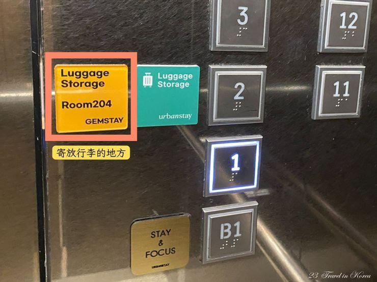

✈️ 機場 → 西面站 交通方式
🚇 捷運（推薦）
金海機場輕軌「機場站」→「沙上站」，轉地鐵 2 號線至「219 西面站」。全程約 26 分鐘，費用低廉。
T-money 卡可直接搭乘，無需另購票。
T-money 卡可直接搭乘，無需另購票。
🚌 機場巴士 2 號（行李多時首選）
乘車處：國際航線 1F 出口 3 號站牌
首班 07:00 ／ 末班 22:00
單程約 50 分鐘，直達西面站
票價：成人 ₩ 6,000
每人限帶 2 件 / 總重 30kg 行李
首班 07:00 ／ 末班 22:00
單程約 50 分鐘，直達西面站
票價：成人 ₩ 6,000
每人限帶 2 件 / 總重 30kg 行李
🚇 機場 → 西面站 詳細步驟（全程約 40 分鐘）
1
入境後在 CU 便利商店買 T-money 卡，儲值 ₩10,000（搭車用）
2
搭輕軌（紫線）往 사상（沙上） 方向，3站，約 7 分鐘，車資約 ₩1,300
3
沙上站（501）先刷卡出站（享轉乘優惠），跟綠色 ② 號線指標走，有電梯，步行 5～7 分鐘
4
搭地鐵 2 號線往 장산 方向，14 分鐘到西面站，12 號出口（有電梯）出站，步行 2 分鐘到 Gem Stay
🕐 全程約 40 分鐘 💳 總車資約 ₩1,800
🏠 住宿基地
Gem Stay Seomyeon
地址：#204, 752, Jungang-daero, Busanjin-gu, 釜山鎮區 47245
地鐵：1 號線「119 西面站」＆ 2 號線「219 西面站」轉乘站步行可達
周邊：西面地下街、樂天百貨免稅店、田浦咖啡街、NC 百貨、西面青春街
優勢：釜山交通核心樞紐，前往海雲台、廣安里、南浦洞、甘川洞均可直達，是五天行程最佳基地
地鐵：1 號線「119 西面站」＆ 2 號線「219 西面站」轉乘站步行可達
周邊：西面地下街、樂天百貨免稅店、田浦咖啡街、NC 百貨、西面青春街
優勢：釜山交通核心樞紐，前往海雲台、廣安里、南浦洞、甘川洞均可直達，是五天行程最佳基地
🧳 行李寄放 & Check-in 說明
Check-in 時間：下午 4:00 開始，飯店會在 3:30 傳送 check-in 資訊
提早抵達？可將行李寄放在 2 樓 204 室，密碼：0505*
放好行李後就可以輕裝出門先去逛西面商圈 🎉
提早抵達？可將行李寄放在 2 樓 204 室，密碼：0505*
放好行李後就可以輕裝出門先去逛西面商圈 🎉

💱 換錢所推薦（西面站 7 號出口附近）
- Money Box 서면지점：西面站 7 號出口，步行進入서면시장 1 樓，明確支援台幣（TWD）直接兌換，支援 20 種貨幣
- 營業時間：週一～六 10:00–19:00
- 建議策略：機場只換 ₩20,000 夠搭車，到西面再換大額，匯率更划算
⚠️ 週日公休，週日抵達請先在機場多換一些備用
🚇 釜山地鐵路線圖

🔍 點擊放大
Day 01
抵達西面 × 文青散策
落地寄行李 → 換錢 → 田浦咖啡街 → 4pm Check-in → 西面商圈採買
🚇 今日交通路線
金海機場 → 飯店（Gem Stay）
【巴士】國際航線1F 出口3號站牌，搭機場巴士2號，約50分鐘直達219西面站，₩6,000。行李限2件/30kg
【捷運】出關後沿指示牌往국내선（國內線）方向步行，跟著「경전철」指示牌約 3–5 分鐘到輕軌站 → K4 공항역（機場站） → K1 사상역（沙上站）下車換乘地鐵2號線 → 219 서면역（西面站），約26分鐘
① 出 12號出口，步行1分鐘到 Gem Stay，寄放行李至 2F 204室（Check-in 4pm 才開始）
② 輕裝走到 7號出口，步行3分鐘到 Money Box 서면지점（서면시장 1F）換錢（約8–10分鐘）
③ 換完錢 → 前往田浦咖啡街，4pm 回飯店正式 Check-in
【巴士】國際航線1F 出口3號站牌，搭機場巴士2號，約50分鐘直達219西面站，₩6,000。行李限2件/30kg
【捷運】出關後沿指示牌往국내선（國內線）方向步行，跟著「경전철」指示牌約 3–5 分鐘到輕軌站 → K4 공항역（機場站） → K1 사상역（沙上站）下車換乘地鐵2號線 → 219 서면역（西面站），約26分鐘
① 出 12號出口，步行1分鐘到 Gem Stay，寄放行李至 2F 204室（Check-in 4pm 才開始）
② 輕裝走到 7號出口，步行3分鐘到 Money Box 서면지점（서면시장 1F）換錢（約8–10分鐘）
③ 換完錢 → 前往田浦咖啡街，4pm 回飯店正式 Check-in
💱 機場只換 ₩20,000 夠搭車即可，大額到 Money Box 換匯率更好。Check-in 4pm，行李先放 2F 204室（密碼 0505*）
西面 → 田浦咖啡街
219 서면역（西面站）搭地鐵2號線（往 202 장산（長山）방향），一站到 218 전포역（田浦站），出 7號出口步行5分鐘
219 서면역（西面站）搭地鐵2號線（往 202 장산（長山）방향），一站到 218 전포역（田浦站），出 7號出口步行5分鐘
田浦 → 西面地下街 / 樂天百貨（回程）
218 전포역（田浦站）搭地鐵2號線（往 양산（梁山）방향），一站回 219 서면역（西面站），步行即達
218 전포역（田浦站）搭地鐵2號線（往 양산（梁山）방향），一站回 219 서면역（西面站），步行即達
CI 188 抵達金海機場 → Gem Stay
11:15 降落金海機場（航廈I）。前往西面方式：
① 機場巴士2號：國際航線1F 出口3號站牌，首班07:00，50分鐘直達西面站，₩6,000。行李限2件/30kg。
② 捷運：出關後沿指示牌往국내선（國內線）方向步行，跟著「경전철」指示牌約 3–5 分鐘到輕軌站 → 공항역（K4）→ 사상역（K1/227）轉地鐵2號線 → 219西面站，約26分鐘。
抵達後 12號出口走到 Gem Stay，先將行李寄放 2F 204室（密碼 0505*），Check-in 要等到 4pm。
寄完行李 → 換錢 → 田浦咖啡街，輕鬆開啟釜山第一天！
① 機場巴士2號：國際航線1F 出口3號站牌，首班07:00，50分鐘直達西面站，₩6,000。行李限2件/30kg。
② 捷運：出關後沿指示牌往국내선（國內線）方向步行，跟著「경전철」指示牌約 3–5 分鐘到輕軌站 → 공항역（K4）→ 사상역（K1/227）轉地鐵2號線 → 219西面站，約26分鐘。
抵達後 12號出口走到 Gem Stay，先將行李寄放 2F 204室（密碼 0505*），Check-in 要等到 4pm。
寄完行李 → 換錢 → 田浦咖啡街，輕鬆開啟釜山第一天！
📍 Gem Stay Seomyeon，#204, 752, Jungang-daero, Busanjin-gu, 釜山 47245
田浦咖啡街
距離西面站僅一站（田浦站），是釜山最著名的文青咖啡一條街。數十家個性咖啡廳林立，建築風格各異，適合搭機後放鬆漫步。傍晚燈光亮起更有氣氛，隨便走進一家都有好拍的角落。
吃
Crashop 迷你可頌 20種口味 ₩2,500 ｜ 街邊辣炒年糕（떡볶이）₩2,000 ｜ Bao Haus 台式刈包（台灣人開的救星）
逛
各主題咖啡廳巷弄（工業/日系/花藝風）｜ Cookie The Door 造型餅乾 ｜ 巷內 vintage 選品雜貨小店
必買
Crashop 可頌盒裝（帶走）｜ Cookie House 造型餅乾（送禮）｜ 精品烘焙豆真空包
📍 田浦洞，地鐵 2 號線「田浦站」附近
☕ 田浦咖啡廳推薦
Franklin Coffee Roasters
📍 步行 4 分鐘（最近）
必點：香草 Longban
剛到釜山首選，安靜放鬆
STRUT COFFEE
📍 步行 15 分鐘
必點：精品豆冰美式 ₩5,300
2025 世界百大咖啡
OFF COURSE
📍 步行 15 分鐘
必點：可麗露、酥脆可頌
5 層樓，頂樓露天泳池
FM Coffee House
📍 步行 15 分鐘
必點：時令水果派
田浦老牌，有二樓露台
西面地下街
西面站正下方的大型地下購物街，美妝、服飾、配件、小吃全部囊括，延伸數百公尺。不買東西只逛完全沒壓力，是認識釜山現代商業面的最佳入口。
吃
出口上方西面食堂街（橘色帳篷攤）｜ 豬肉湯飯（돼지국밥）₩9,000 ｜ 傳統炸雞、蔥煎餅
逛
K-fashion 單品 ₩10,000起 ｜ Etude House、Innisfree 等 K-beauty 連鎖（比免稅店便宜 20–40%）｜ 全長 500 公尺，從 2號出口進入
必買
K-beauty 保濕/防曬｜ 飾品耳環 ₩5,000起 ｜ Mediheal、Papa Recipe 面膜囤貨
📍 西面站地下，釜山鎮區
- 從 2 號出口進入，往裡走，女裝最集中
- ₩10,000（約台幣 240 元）起跳攤位很多
- 推薦：Square 101、Monologue（牛仔褲 ₩10,000）
- ⚠️ 下午 12:00 後才開門，早上去多數店關著
- 帶現金，部分攤位不收刷卡
樂天百貨釜山總店（含免稅店）
亞洲最大規模樂天百貨之一，緊鄰西面站。地下食品樓層有各式韓國熟食、甜點與伴手禮，價格平實。免稅店在同棟樓，回程前採購超方便。
吃
B1 超市熟食：炸雞、紫菜飯捲、豬腳 ₩3,000起 ｜ 9F 餐廳街：日式、韓牛燒烤
逛
7F–8F 免稅店（AHC、IOPE、CLIO，護照帶好）｜ 地下樂天超市零食伴手禮一次補齊
必買
明太魚卵（명란）真空包 ₩15,000 ｜ 大鮮燒酒（대선소주）釜山在地品牌 ₩1,500 ｜ 海苔禮盒 ₩8,000起
📍 Jungang-daero, Busanjin-gu（西面站旁）
Day 02
東部海岸 × 海味之旅
海崖佛寺、長腳蟹市場，晚上廣安大橋燈光秀收尾
🚇 今日交通路線
西面站 → 海東龍宮寺
① 219 서면역（西面站）搭地鐵2號線（往 202 장산（長山）방향），約25分鐘到 203 해운대역（海雲台站）
② 出 7號出口，在站外找巴士站牌
③ 搭 181號 或 100號巴士，在
④ 沿指示牌步行約 10–15 分鐘到龍宮寺入口
全程約 45–55 分鐘
① 219 서면역（西面站）搭地鐵2號線（往 202 장산（長山）방향），約25分鐘到 203 해운대역（海雲台站）
② 出 7號出口，在站外找巴士站牌
해운대도시철도역（站號 09730）③ 搭 181號 或 100號巴士，在
용궁사.국립수산과학원（站號 16069）下車④ 沿指示牌步行約 10–15 分鐘到龍宮寺入口
全程約 45–55 分鐘
海東龍宮寺 → 機張市場
① 回到
② 繼續搭 181號巴士往北（往機張方向），約 15–20 分鐘
③
① 回到
용궁사.국립수산과학원（站號 16069）同站牌② 繼續搭 181號巴士往北（往機張方向），約 15–20 分鐘
③
기장시장（站號 16552）下車，步行 1–2 分鐘即達
機張市場 → 廣安里
① 機張市場附近搭 181號巴士往海雲台方向，約 30 分鐘到
② 進 203 해운대역（海雲台站）搭地鐵2號線，往 양산（梁山）방향，到 209 광안역（廣安站）
③ 出 5號出口，步行約 10 分鐘到廣安里海灘
全程約 50–60 分鐘
① 機張市場附近搭 181號巴士往海雲台方向，約 30 分鐘到
해운대도시철도역（站號 09729）② 進 203 해운대역（海雲台站）搭地鐵2號線，往 양산（梁山）방향，到 209 광안역（廣安站）
③ 出 5號出口，步行約 10 分鐘到廣安里海灘
全程約 50–60 分鐘
廣安里 → 西面（回程）
① 從海灘步行回 209 광안역（廣安站）5號出口（約 10 分鐘）
② 搭地鐵2號線往 양산（梁山）방향，約14分鐘到 219 서면역（西面站）
① 從海灘步行回 209 광안역（廣安站）5號出口（約 10 分鐘）
② 搭地鐵2號線往 양산（梁山）방향，約14分鐘到 219 서면역（西面站）
⚠️ 末班車約 23:00–23:30，建議 23:00 前搭上
🍳 出發前早餐（西面 1 號出口步行 3 分鐘）
松亭三代豬肉湯飯
송정3대국밥
1946年老店，湯底熬24小時
水營本家豬肉湯飯
수영본가 돼지국밥
評分4.9，奶白豬骨湯
浦項豬肉湯飯
포항돼지국밥
70年老字號，5:00最早開門
一品狀元豬肉湯飯
일품장원돼지국밥
清一色在地客，無觀光味
濟州家鮑魚粥
제주가 서면점
不吃豬肉的清淡替代
海東龍宮寺
建在海蝕崖上的千年佛寺，浪花拍打岩石，香火與海景同框，是韓國極少見的海岸寺廟奇景。早晨人少光線絕美，是全釜山最值得拍的景點之一。建議上午第一站前往。
吃
入口坡道攤位：씨앗호떡（種子甜煎餅） ₩2,000 必吃 ｜ 魚板湯串（어묵） ₩1,000
逛
沿海岩石寺廟全程步行 ｜ 坡道紀念品店：手繪明信片、寺廟小物 ｜ 寺內掛祈願燈籠 ₩3,000（工作人員協助）
必買
手繪木刻吊飾 ₩3,000–5,000 ｜ 寺廟限定平安符、念珠
📍 Haedong Yonggungsa Temple, 86 Yonggung-gil, Gijang-gun（機張郡）
機張市場 長腳蟹美食
機張以長腳蟹（대게）聞名全韓，市場周邊海鮮餐廳競爭激烈，螃蟹肉質鮮甜，價格遠比市區實惠。螃蟹粥、生蝦蓋飯、辣炒螃蟹都值得一試，午餐在此解決最划算。
吃
指著水槽活蟹確認重量→樓上料理：雪蟹（홍게） ₩30,000+/kg，附蟹肉炒飯 ₩6,000/人 ｜ 烤海鰻（아나고구이） ₩20,000
💡 問價格：「얼마예요?」拿計算機讓對方打數字
💡 問價格：「얼마예요?」拿計算機讓對方打數字
逛
一樓活蟹水槽大廳可自由走動比價 ｜ 外圍乾貨區：海帶、小魚乾
必買
機張海帶（기장 미역）真空包 ₩10,000–20,000，全國頂級，送禮超實用 ｜ 機張小魚乾（기장 멸치） ₩10,000
📍 Gijang Market, 16 Eumnae-ro 104beon-gil, Gijang-gun（機張郡）
廣安里海灘 × 廣安大橋燈光秀
全長 7.4 公里的雙層大橋，夜間燈光秀每晚定時點亮，在廣安里海灘正對大橋欣賞是最佳免費視角。沿岸咖啡廳、小吃攤密布，魚板湯、炸物隨手可得。
吃
烤蛤蜊（조개구이）海灘旁餐廳現烤 ₩20,000起 ｜ 밀면（釜山小麥冷麵） ₩8,000，首爾吃不到的在地麵 ｜ 民樂活魚中心生魚片 ₩30,000起/人
逛
沿海灘步道散步看廣安大橋燈光秀（日落後最美）｜ Millak The Market 文創選品空間
必買
Orangebada 在地明信片 ₩1,500–2,000 ｜ 民樂魚街海鮮真空外帶（現場請攤商幫忙包裝）
📍 水營區 廣安海濱路 219（廣安里海灘）
Day 03
南部文化 × 傳統市場
彩色山坡聚落、韓國最大海鮮市場、南浦洞 + 國際市場購物，傍晚釜山塔俯瞰港灣
🚇 今日交通路線
西面站 → 甘川洞文化村
① 119 서면역（西面站）搭地鐵1號線（往 다대포해수욕장（多大浦）방향），約15分鐘到 109 토성역（土城站）
② 出 6號出口，右轉步行 2–3 分鐘到
③ 搭 사하1-1 或 서구2號 社區小巴，約 10 分鐘
④
全程約 30 分鐘 小巴車資約 ₩1,200
① 119 서면역（西面站）搭地鐵1號線（往 다대포해수욕장（多大浦）방향），約15分鐘到 109 토성역（土城站）
② 出 6號出口，右轉步行 2–3 分鐘到
부산대학병원.토성역（站號 02081）站牌③ 搭 사하1-1 或 서구2號 社區小巴，約 10 分鐘
④
감정초등학교.감천문화마을（站號 現場確認）下車，步行 1 分鐘到入口全程約 30 分鐘 小巴車資約 ₩1,200
甘川洞 → 札嘎其市場
① 原站牌（站號 現場確認）搭回程小巴回109土城站
② 轉地鐵1號線（往 노포（老圃）방향），一站到 110 자갈치역（札嘎其站）
③ 出 10號出口，步行 2 分鐘
① 原站牌（站號 現場確認）搭回程小巴回109土城站
② 轉地鐵1號線（往 노포（老圃）방향），一站到 110 자갈치역（札嘎其站）
③ 出 10號出口，步行 2 分鐘
札嘎其 → 南浦洞 → 國際市場 → 釜山塔
全程步行可達，各點距離 3–8 分鐘
全程步行可達，各點距離 3–8 分鐘
釜山塔 → 西面（回程）
從 111 남포역（南浦站）搭地鐵1號線（往 노포（老圃）방향），約15分鐘到 119 서면역（西面站）
從 111 남포역（南浦站）搭地鐵1號線（往 노포（老圃）방향），約15分鐘到 119 서면역（西面站）
甘川洞文化村
層疊山坡上的彩色小屋群，韓版聖托里尼。巷弄間藏著壁畫、裝置藝術與特色小店，自由漫步探索即可。地圖 ₩ 2,000 含紀念小禮物，物超所值。建議上午前往，人少光線好。
吃
凍啤酒 Slush（맥주슬러시）村內限定 ₩5,000 ｜ 造型棉花糖現場塑形 ₩5,000–8,000 ｜ 露天咖啡廳俯瞰彩色屋頂 ₩5,000–7,000
逛
買入口集章地圖 ₩2,000（含小禮物），按圖找小王子雕像等裝置 ｜ 藝術家工作室、韓式拍貼機（道具免費借）
必買
人像漫畫素描 ₩7,000–10,000（裱框帶回超有紀念價值）｜ 限定鳥瞰彩色屋頂明信片組 ₩3,000–5,000
📍 203 Gamnae 2-ro, Saha-gu（沙下區甘川洞）
札嘎其市場
韓國規模最大的海鮮市場，一樓是活魚攤販，二樓可加工代客料理。生章魚、帝王蟹、活蝦、海螺應有盡有，現買現吃最新鮮。生章魚入口彈牙鮮甜，是釜山必體驗的美食。
吃
一樓挑比目魚（광어）→二樓料理，生魚片+辣魚湯 2人約 ₩60,000–80,000，加工費 ₩5,000/人
💡 確認含魚總價：「생선값 포함해서 얼마예요?」
💡 確認含魚總價：「생선값 포함해서 얼마예요?」
逛
一樓室外露天阿姨攤，蝦米、醃漬品最原汁原味 ｜ 入口外魚板串小攤 ₩1,000
必買
삼진어묵 魚板禮盒（市場旁名店）各口味真空包 ₩10,000–20,000 ｜ 乾蝦米（건새우） ₩5,000，煮湯提鮮帶回台灣
📍 52 Jagalchihaean-ro, Jung-gu（中區札嘎其海岸路 52）
南浦洞商圈
釜山最熱鬧的老城區商圈，服飾、小吃、伴手禮林立。龍頭山公園登高可俯瞰港口與市景，周邊巷弄也有許多釜山道地小吃。
吃
BIFF廣場 씨앗호떡 ₩2,000 南浦洞必吃排隊名物 ｜ 충무김밥 細捲配辣花枝 ₩5,000 ｜ 富平罐頭夜市（週四–六 19:00–深夜）炸物串燒
逛
국제시장廉價雜貨、廚具、伴手禮迷宮 ｜ BIFF廣場地面韓星手印打卡 ｜ 釜山電影節廣場周邊小購物街
必買
국제시장韓式石鍋（比百貨便宜50%）｜ 彩色韓服髮帶、小荷包 ₩3,000–8,000
📍 37-55 Yongdusan-gil, Jung-gu（中區龍頭山路）
國際市場（국제시장）
釜山最著名的傳統市場，與南浦洞緊鄰，步行即達。販售乾貨、服飾、紀念品，街頭小吃豐富多元，是電影《國際市場》的拍攝地，感受老釜山的真實生活氣息。
📍 52-6 Gukjesijang 4-gil, Jung-gu, Busan
釜山塔
矗立於龍頭山公園制高點的地標，塔外打卡免費，塔內展望台可俯瞰釜山港與整個南浦洞市區，傍晚時分港灣燈光漸亮，景色迷人。
📍 37-55 Yongdusan-gil, Jung-gu（龍頭山公園內）
Day 04
海雲台全攻略
海灣碼頭午餐 → Sky Capsule 膠囊列車 → 달맞이길 迎月路賞櫻 → 登頂釜山第一高樓
🚇 今日交通路線
西面 → The Bay 101
219 서면역（西面站）搭地鐵2號線（往 202 장산（長山）방향），約20分鐘到 204 동백역（冬柏站）
出 1號出口，步行約 10–15 分鐘到 The Bay 101
219 서면역（西面站）搭地鐵2號線（往 202 장산（長山）방향），約20分鐘到 204 동백역（冬柏站）
出 1號出口，步行約 10–15 分鐘到 The Bay 101
The Bay 101 → 藍線公園 Mipo 站（膠囊列車起點）
【步行】沿海雲台海灘往東走，經過整段白沙灘後繼續往 Mipo 方向，全程約 35–45 分鐘，順便逛海灘
【計程車】The Bay 101 門口叫車直達 미포정거장，約 10 分鐘、₩5,000–6,000（推薦，邊走邊玩腳可能痠）
⚠️ Sky Capsule 膠囊列車務必提前預訂（KKday / Klook），現場排隊等待 2–3 小時起跳，₩40,000/2人一艙
【步行】沿海雲台海灘往東走，經過整段白沙灘後繼續往 Mipo 方向，全程約 35–45 分鐘，順便逛海灘
【計程車】The Bay 101 門口叫車直達 미포정거장，約 10 分鐘、₩5,000–6,000（推薦，邊走邊玩腳可能痠）
⚠️ Sky Capsule 膠囊列車務必提前預訂（KKday / Klook），現場排隊等待 2–3 小時起跳，₩40,000/2人一艙
Sky Capsule 청사포 下車 → 달맞이길 迎月路（步行賞櫻）
청사포역 出站後，沿 달맞이길（迎月路）步行回 Mipo 方向，約 2–3km、30–40 分鐘
這條路就是 Sky Capsule 的上方山路，兩側滿開櫻花，沿途有觀景台和咖啡廳可停
청사포역 出站後，沿 달맞이길（迎月路）步行回 Mipo 方向，約 2–3km、30–40 分鐘
這條路就是 Sky Capsule 的上方山路，兩側滿開櫻花，沿途有觀景台和咖啡廳可停
달맞이길 → BUSAN X the SKY（엘시티 LCT）
走回 Mipo 後叫計程車直達 LCT，約 10 分鐘、₩5,000–7,000（推薦）
或步行回 203 해운대역（海雲台站）→ 地鐵2號線往 202 장산（長山）방향一站到 204 동백역（冬柏站）→ 步行 15 分鐘到 LCT
走回 Mipo 後叫計程車直達 LCT，約 10 分鐘、₩5,000–7,000（推薦）
或步行回 203 해운대역（海雲台站）→ 地鐵2號線往 202 장산（長山）방향一站到 204 동백역（冬柏站）→ 步行 15 分鐘到 LCT
BUSAN X the SKY → 西面（回程）
步行約 15 分鐘到 204 동백역（冬柏站）→ 地鐵2號線往 양산（梁山）방향，約20分鐘到 219 서면역（西面站）
步行約 15 分鐘到 204 동백역（冬柏站）→ 地鐵2號線往 양산（梁山）방향，約20分鐘到 219 서면역（西面站）
⚠️ 末班車約 23:15–23:30，建議 22:30 前出發
The Bay 101（더베이101）
海雲台濱海複合設施，有咖啡廳、餐廳與遊艇碼頭。白天可享海景配咖啡，晚上廣安大橋燈光秀與摩天大樓倒映海面，夜景絕美。戶外區域完全免費。
吃
露台 Cafe SIDE 海景咖啡 ₩6,000–8,000（傍晚搶靠海座位）｜ Fingers & Chat 炸雞翅+啤酒 2人 ₩25,000–35,000
逛
遊艇碼頭傍晚散步拍廣安大橋倒影 ｜ 遊艇體驗（요트 투어） ₩30,000–50,000/人，繞橋30–40分鐘，Klook可預訂
必買
帆船主題明信片 ₩2,000–5,000 ｜ 遊艇體驗本身就是最好的紀念
📍 APEC-ro 17, Haeundae-gu
海雲台海灘（해운대해수욕장）
釜山最著名的海灘，白沙灘綿延 1.5 公里，沿岸摩天大樓與海浪共存。夏季熱鬧、春季人少舒適，是韓國代表性海灘景點。沿岸有豐富餐廳可用午餐。
吃
海雲台傳統市場（步行5分鐘）：해물파전 海鮮煎餅 ₩12,000 ｜ 名物 hotteok ₩2,000 排隊名攤 ｜ 해변 景觀餐廳午餐 ₩15,000起
逛
1.5km 白沙灘散步 ｜ 往東走到 Mipo（미포）海景咖啡廳聚落，也是藍線公園起點
必買
傳統市場醃漬海鮮（어리굴젓）真空外帶 ｜ 市場攤商可代為真空包裝
📍 海雲台區 海雲台海濱路 264 沿線
海雲台藍線公園（해운대블루라인파크）
廢棄鐵路改建的海岸觀光小火車，沿著懸崖邊行駛，車窗外是一望無際的東海美景。步道全線亦可免費步行漫遊，是釜山必訪打卡點，景色絕美。
吃
Mipo 站 Montee 104 Cafe：月台正上方，邊喝咖啡看列車通過 ₩6,000 ｜ 清沙浦站烤蛤蜊+烤鰻魚 ₩30,000–50,000/人
逛
Sky Capsule 透明膠囊車 ₩40,000/2人（⚠️ 務必提前在 KKday 訂票，現場排隊可能等 2–3 小時）｜ 海岸木棧道步行全程免費 ｜ 清沙浦雙胞胎燈塔打卡
必買
Mipo / 清沙浦站紀念品店：海岸列車主題杯子、徽章 ₩5,000–15,000
📍 13 Dalmaji-gil 62beon-gil, Haeundae-gu
달맞이길 迎月路（달맞이고개）
連接 Mipo（미포）與清沙浦（청사포）的山坡蜿蜒小路，是釜山春季賞櫻名所。每年 3 月底至 4 月初，兩側滿開山櫻花，彷彿走進粉色隧道。
Sky Capsule 走海岸線、迎月路走山坡線，兩者剛好組成 Mipo ↔ 청사포 環形路線，一次體驗兩種截然不同的景色。
Sky Capsule 走海岸線、迎月路走山坡線，兩者剛好組成 Mipo ↔ 청사포 環形路線，一次體驗兩種截然不同的景色。
吃
路旁 達摩咖啡（達磨茶房） 復古風咖啡廳 ₩6,000 ｜ 청사포 海景餐廳：海鮮炒麵（해물짜장）₩12,000
逛
山坡中段 달맞이 언덕 觀景台：可同時看到海雲台海灘全景與山坡櫻花 ｜ 청사포 雙胞胎燈塔（쌍둥이 등대）打卡
必買
路旁小店 手工果醬 ₩8,000 ｜ 咖啡廳限定 櫻花拿鐵（季節限定）
📍 달맞이길（달맞이고개），海雲台區 미포 → 청사포
BUSAN X the SKY（부산엑스더스카이）
位於釜山第一高樓 LCT 大樓 98–100 樓的展望台，360 度俯瞰釜山全景，可同時看到海雲台海灘、廣安大橋與市區天際線。日落時分入場最美，CP 值極高。
📍 30 Dalmaji-gil, Haeundae-gu（LCT The Sharp 大樓）
Day 05
輕鬆收尾 × 返程
西面漫步、田浦最後一杯咖啡，18:00 前出發機場
🚇 今日交通路線
西面 → 田浦咖啡街
219 서면역（西面站）搭地鐵2號線（往 202 장산（長山）방향），一站到 218 전포역（田浦站），出 7號出口步行 5 分鐘
219 서면역（西面站）搭地鐵2號線（往 202 장산（長山）방향），一站到 218 전포역（田浦站），出 7號出口步行 5 分鐘
Gem Stay → 金海機場（捷運路線）
① 飯店 12號出口步行 1 分鐘回 Gem Stay 取行李
② 走回 219 서면역（西面站），進站搭地鐵 2 號線往 양산（梁山）방향
③ 搭 8 站，約 14 分鐘到 227 사상역（沙上站）下車
④ 出站後跟著「부산김해경전철（釜山金海輕軌）」指示牌換乘，步行約 3–5 分鐘到輕軌月台
⑤ 搭輕軌往 가야대（伽倻大）방향（終點），4 站，約 12 分鐘到 K4 공항역（機場站）下車
⑥ 出站後跟指示牌步行約 3 分鐘到 國際航廈（국제선）辦理 check-in
全程約 35–40 分鐘，費用約 ₩2,000–3,000
① 飯店 12號出口步行 1 分鐘回 Gem Stay 取行李
② 走回 219 서면역（西面站），進站搭地鐵 2 號線往 양산（梁山）방향
③ 搭 8 站，約 14 分鐘到 227 사상역（沙上站）下車
④ 出站後跟著「부산김해경전철（釜山金海輕軌）」指示牌換乘，步行約 3–5 分鐘到輕軌月台
⑤ 搭輕軌往 가야대（伽倻大）방향（終點），4 站，約 12 分鐘到 K4 공항역（機場站）下車
⑥ 出站後跟指示牌步行約 3 分鐘到 國際航廈（국제선）辦理 check-in
全程約 35–40 分鐘，費用約 ₩2,000–3,000
⚠️ 20:00 班機，建議 17:30 前離開飯店，給 check-in + 過安檢 + 走去 Sky Hub Lounge 充裕時間
西面青春街散步
輕鬆晃，不用趕。西面青春街是釜山年輕人的潮流聚集地，各種平價服飾、小物、咖啡廳林立。買點小東西、吃個早午餐，悠閒開啟最後一天。
吃
豬肉湯飯街（할매국밥） ₩9,000 全天 ｜ 帳篷攤夜宵（族발/炸串）₩8,000起 ｜ Topokki 年糕吃到飽 ₩13,000
逛
Olive Young K-beauty 最後掃貨（買一送一常有）｜ 노래방（KTV） 包廂 ₩15,000–20,000/小時，韓國夜間必體驗
必買
Olive Young K-beauty 彩妝護膚最後補貨 ｜ 散裝韓式零食攤 ₩1,000起，帶上飛機當零嘴
📍 西面青春街（부산진구 서면）
田浦咖啡街最後一杯
行程最後，再喝一杯釜山咖啡。田浦咖啡街是釜山最知名的咖啡一條街，各種風格獨特的咖啡廳密集排列，帶著回憶慢慢品嚐這最後一杯。
📍 田浦咖啡街（전포카페거리，釜山鎮區）
返回飯店取行李 + 出發機場
取行李後搭機場巴士 2 號或地鐵前往金海機場。建議留 2 小時餘裕辦理 check-in 及過安檢。
📍 金海國際機場（김해국제공항）
Sky Hub Lounge（스카이허브라운지）
金海機場國際航廈出境安檢後的付費貴賓室。辦完 check-in、過安檢後直接進，吃飽睡飽等飛機，比坐在候機室舒服一萬倍。
提供：自助餐點、飲料、酒水、淋浴間（需預約）、Wi-Fi、充電座
入場費：約 ₩30,000–40,000 / 人（現場付）
Priority Pass / 聯合信用卡：確認持有卡片是否含此機場貴賓室資格，有的話免費入場
提供：自助餐點、飲料、酒水、淋浴間（需預約）、Wi-Fi、充電座
入場費：約 ₩30,000–40,000 / 人（現場付）
Priority Pass / 聯合信用卡：確認持有卡片是否含此機場貴賓室資格，有的話免費入場
📍 金海國際機場 國際航廈 3F 出境後（過安檢後右側）
⚠️ 航班提醒 — CI 187 返程
航班：CI 187 · 4/4 (六) 金海 PUS 20:00 → 桃園 TPE 21:20
國際線建議提前 至少 2 小時到達機場辦理報到手續。
請於 18:00 前出發（機場巴士 50 分鐘 / 捷運 26 分鐘）。
機場巴士2號：西面站搭乘，₩6,000，行李限 2 件/30kg。
國際線建議提前 至少 2 小時到達機場辦理報到手續。
請於 18:00 前出發（機場巴士 50 分鐘 / 捷運 26 分鐘）。
機場巴士2號：西面站搭乘，₩6,000，行李限 2 件/30kg。
Tips
💡 旅遊貼士
交通、行李、商圈、市場必吃 — 出發前看這頁就夠
T-money / Cashbee 交通卡
韓國地鐵、公車、計程車均可用 T-money 或 Cashbee 感應支付，比單程票便宜且可享地鐵轉乘優惠。抵達機場後於便利商店（GS25/CU）或地鐵站即可購買，儲值金額可在便利商店加值。旅程結束後剩餘金額可退款（手續費 ₩500）。
📍 機場入境大廳 GS25 / CU 便利商店皆有售
機場巴士 2 號 注意事項
乘車處：國際航線 1F 出口 3 號站牌。
首班 07:00 ／ 末班 22:00，班距約 30 分鐘。
單程 50 分鐘，直達西面站，票價 成人 ₩6,000。
行李限制：每人最多 2 件 / 總重 30kg，超額可能無法上車。
可用 T-money 感應或現金付款。
首班 07:00 ／ 末班 22:00，班距約 30 分鐘。
單程 50 分鐘，直達西面站，票價 成人 ₩6,000。
行李限制：每人最多 2 件 / 總重 30kg，超額可能無法上車。
可用 T-money 感應或現金付款。
📍 金海機場國際航線 1F 出口 3 號站牌
西面商圈完整指南
西面是釜山最大的複合商業中心，購物、美食、娛樂一站搞定：
· 西面地下街：西面站正下方，美妝、服飾、小吃
· 樂天百貨釜山總店：免稅店同棟，靠近西面站
· NC 百貨：西面青春街附近，年輕風格品牌
· 西面青春街 / 西面一號街：夜間小吃、24H 烤肉、豬肉湯飯
· 西面地下街：西面站正下方，美妝、服飾、小吃
· 樂天百貨釜山總店：免稅店同棟，靠近西面站
· NC 百貨：西面青春街附近，年輕風格品牌
· 西面青春街 / 西面一號街：夜間小吃、24H 烤肉、豬肉湯飯
📍 釜山鎮區 西面站（地鐵1號線119/2號線219）
市場必吃 Tips
機張市場：長腳蟹（대게）是當地名物，午餐在市場周邊海鮮餐廳吃，比市區便宜 30%。可加點螃蟹粥收尾。
札嘎其市場：生章魚（산낙지）現切入口彈動，是釜山最刺激的美食體驗。帝王蟹依市價，二樓加工費另計。購買前先確認總價再拍板。
西面豬肉湯飯（돼지국밥）：釜山名物，₩8,000–10,000，隨時都好吃。
札嘎其市場：生章魚（산낙지）現切入口彈動，是釜山最刺激的美食體驗。帝王蟹依市價，二樓加工費另計。購買前先確認總價再拍板。
西面豬肉湯飯（돼지국밥）：釜山名物，₩8,000–10,000，隨時都好吃。
📍 機張市場（機張郡）/ 札嘎其市場（中區）/ 西面各店
省錢旅行總攻略
· 景點多為免費：海東龍宮寺、甘川洞文化村、廣安里海灘、The Bay 101 戶外區
· 早餐在 GS25 / CU 解決，₩2,000–4,000 省時省錢
· 慶州一日遊 KTX 最快，提早在 KorailTalk App 訂票更便宜
· 海雲台藍線公園步道全程免費，小火車可選擇性搭乘
· 魚板（어묵）路邊攤 ₩1,000–2,000，釜山最道地的街食
· 免稅店回程前在樂天百貨辦理，護照帶好即可
· 早餐在 GS25 / CU 解決，₩2,000–4,000 省時省錢
· 慶州一日遊 KTX 最快，提早在 KorailTalk App 訂票更便宜
· 海雲台藍線公園步道全程免費，小火車可選擇性搭乘
· 魚板（어묵）路邊攤 ₩1,000–2,000，釜山最道地的街食
· 免稅店回程前在樂天百貨辦理，護照帶好即可
實用 App & 網站
· Naver Map：韓國最準確地圖，捷運路線、巴士即時班次一把抓
· KakaoTaxi：叫計程車，比路邊攔更安全便宜
· KorailTalk：KTX / ITX 訂票，慶州一日遊必備
· Papago：韓語翻譯神器，逛市場點菜必備
· 兌換韓元：建議台灣先換好，或到釜山市區換匯所（西面、南浦洞附近匯率較好）
· KakaoTaxi：叫計程車，比路邊攔更安全便宜
· KorailTalk：KTX / ITX 訂票，慶州一日遊必備
· Papago：韓語翻譯神器，逛市場點菜必備
· 兌換韓元：建議台灣先換好，或到釜山市區換匯所（西面、南浦洞附近匯率較好）
✦ 備用景點 · 行程有空檔時可考慮
SPA LAND Centum City（신세계 스파랜드）
汗蒸幕 × 22 種溫泉浴池 × 體力消耗大的隔天放鬆首選
位於新世界百貨 센텀시티點 6F，是釜山最具規模的室內汗蒸幕設施。內有 22 種不同溫度 / 礦物的溫泉浴池，以及岩盤浴（汗蒸幕）區域，換好制服躺進去不知不覺 3 小時就過了。
適合安插在任何天行程空檔，或是某天腳走痠了當下午場休息站。
適合安插在任何天行程空檔，或是某天腳走痠了當下午場休息站。
🚇 交通：219 西面站搭地鐵 2 號線（往장산方向），約 20 分鐘到 210 센텀시티站（Centum City），出口步行 5 分鐘到新世界百貨 6F
🕘 營業時間：06:00–22:00（末次入場 20:00）
💳 費用：平日成人 ₩15,000 ／ 假日 ₩18,000（含制服、毛巾、置物櫃）
⚠️ 注意：男女分開更衣浴池區，汗蒸幕區域男女共用
🕘 營業時間：06:00–22:00（末次入場 20:00）
💳 費用：平日成人 ₩15,000 ／ 假日 ₩18,000（含制服、毛巾、置物櫃）
⚠️ 注意：男女分開更衣浴池區，汗蒸幕區域男女共用
⚠️ 回程注意事項
- CI 187 起飛時間 20:00，18:00 前必須出發前往機場
- 國際線建議提前 2–2.5 小時辦理報到，行李托運
- 機場巴士2號從西面站搭乘，50 分鐘抵達，₩6,000
- 捷運路線：西面站 → 沙上站 → 金海輕軌 → 機場站，約 26 分鐘
- 免稅品領取在機場出境側，確認好提貨地點
- 離境前在便利商店退還 T-money 剩餘金額（手續費 ₩500）
Tool
💱 換錢計算機
即時匯率，台幣 ⇄ 韓元換算
載入中…
⚠️ 無法取得即時匯率，請稍後重試。
🇹🇼 台幣金額（TWD）
🇰🇷 韓元結果（KRW）
—
| 台幣 (TWD) | 韓元 (KRW) |
|---|---|
| 載入匯率後自動計算… | |